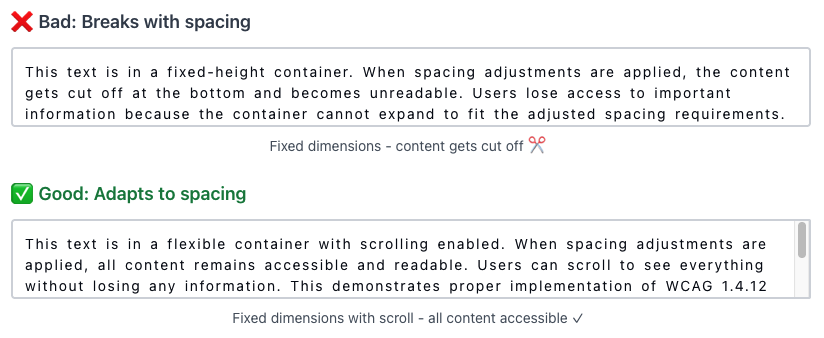
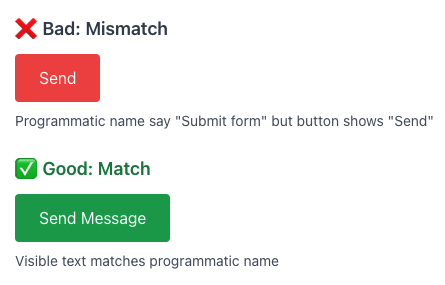
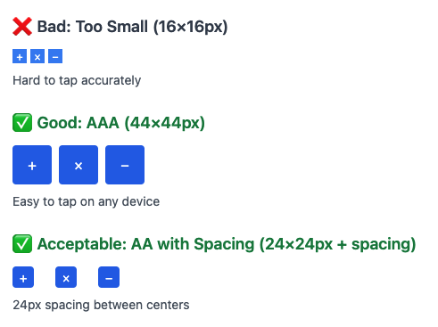
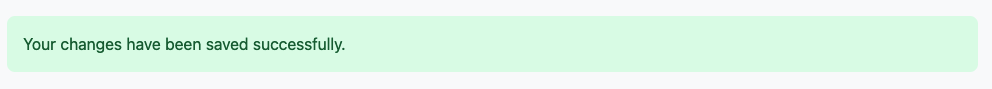

How to stay web accessible:
Applying WCAG 2.1 & 2.2
Cynthia Ng
@Arty-chan
Oct 16, 2025
About me
- 2012-2013 at Ryerson University Library & Archives (now TMUL)
- Migrated website and ensured WCAG 2.0 compliance
- 2013-2014 at CAPER-BC (Centre for Accessible Post-secondary Education Resources BC)
- Migrated website and ensured WCAG 2.0 compliance
- Accessible book production
- 2014-2016 at National Network for Equitable Library Service (NNELS)
- Accessible book production and website improvements
- 2018 at GitLab, assist with first Voluntary Product Accessibility Template (VPAT) report
- Web Accessibility advocate
What is…?
Web accessibility
“Web accessibility, or eAccessibility, is the inclusive practice of ensuring there are no barriers that prevent interaction with, or access to, websites on the World Wide Web by people with physical disabilities, situational disabilities, and socio-economic restrictions on bandwidth and speed.”
WCAG
“Web Content Accessibility Guidelines (WCAG) 2 is developed through the W3C process in cooperation with individuals and organizations around the world, with a goal of providing a single shared standard for web content accessibility that meets the needs of individuals, organizations, and governments internationally.”
WCAG timeline
- WCAG 1.0 : 1999 May
- WCAG 2.0 : 2008 December : 61 success criteria
- WCAG 2.1 : 2018 June : Added 17 new
- WCAG 2.2 : 2023 October : Added 9 new, removed 1
- WCAG 3.0 (future) : 2025 September (latest draft)
What we’re (not) covering
| New Success Criteria in WCAG 2.1 | New Success Criteria in WCAG 2.2 |
|---|---|
| 1.3.4 Orientation (AA) 1.3.5 Identify Input Purpose (AA) 1.3.6 Identify Purpose (AAA) 1.4.10 Reflow (AA) 1.4.11 Non-Text Contrast (AA) 1.4.12 Text Spacing (AA) 1.4.13 Content on Hover or Focus (AA) 2.1.4 Character Key Shortcuts (A) 2.2.6 Timeouts (AAA) 2.3.3 Animation from Interactions (AAA) 2.5.1 Pointer Gestures (A) 2.5.2 Pointer Cancellation (A) 2.5.3 Label in Name (A) 2.5.4 Motion Actuation (A) 2.5.5 Target Size (AAA) 2.5.6 Concurrent Input Mechanisms (AAA) 4.1.3 Status Messages (AA) |
2.4.11 Focus Not Obscured (Minimum) (AA) 2.4.12 Focus Not Obscured (Enhanced) (AAA) 2.4.13 Focus Appearance (AAA) 2.5.7 Dragging Movements (AA) 2.5.8 Target Size (Minimum) (AA) 3.2.6 Consistent Help (A) 3.3.7 Redundant Entry (A) 3.3.8 Accessible Authentication (Minimum) (AA) 3.3.9 Accessible Authentication (Enhanced) (AAA) |
Template & structure
Responsive design
- Orientation - AA (1.3.4)
- allow portrait and landscape
- Reflow - AA (1.4.10)
- content readable/functional at 320px width (400% zoom)
 Source: GR8DAN, CC0, via Wikimedia Commons
Source: GR8DAN, CC0, via Wikimedia Commons

Visual design
Non-Text Contrast - AA (1.4.11)
- 3:1 contrast

Text Spacing - AA (1.4.12)
- stay readable/usable
- Line height: 1.5× font size
- Paragraph spacing: 2× font size
- Letter spacing: 0.12× font size
- Word spacing: 0.16× font size

Focus
- Focus Appearance - AAA (2.4.13)
- minimum size and contrast requirements
- Focus Not Obscured (Minimum) - AA (2.4.11)
- partially hidden is allowed
- Focus Not Obscured (Enhanced) - AAA (2.4.12)
- nothing hidden


Content on Hover or Focus - AA (1.4.13)
- Dismissible: can be closed without moving pointer/focus (usually ESC key)
- Hoverable: pointer can move over the new content without it disappearing
- Persistent: stays visible until dismissed or no longer valid
Animation
- Animation from Interactions - AAA (2.3.3)
Input and pointer interactions
Keyboard and input accessibility
- Character Key Shortcuts - A (2.1.4)
- don't conflict; single-key off/remap option
- Concurrent Input Mechanisms - AAA (2.5.6)
- allow multiple inputs
- Label in Name - A (2.5.3)
- programmatic name has label tex

Touch and pointer interaction
Target size
- Target Size (Minimum) - AA (2.5.8)
- 24x24 px or 24px diameter spacing
- Target Size (Enhanced) - AAA (2.5.5)
- 44x44 px

Pointer Cancellation - A (2.5.2)
- down-event not used
- up-event and allow undo
- up reversal
- essential
Dragging Movements - AA (2.5.7)
- single-pointer alternative

Gesture accessibility
- Motion Actuation - A (2.5.4)
- alternative & disable option
- Pointer Gestures - A (2.5.1)
- provide simple alternatives

Site content
Consistent navigation
- Consistent Help - A (3.2.6)
Forms and input fields
Identify purpose
- Identify Input Purpose - AA (1.3.5)
- autocomplete
<label for="user-phone">Phone Number</label>
<input type="tel" id="user-phone" autocomplete="tel">
- for all user interface components, icons, and regions
Redundant Entry - A (3.3.7)

Authentication
- Accessible Authentication (Enhanced) - AAA (3.3.9)
- alternative non-cft authentication method
- mechanism to assist
- Accessible Authentication (Minimum) - AA (3.3.8)
- object recognition
- non-text personal content

Status messages - AA (4.1.3)

Timeouts - AAA (2.2.6)
- show time left

Testing and validation
- Automated Testing (covers 20-60%)
Source: Deque, The Automated Accessibility Coverage Report. https://www.deque.com/automated-accessibility-testing-coverage/ - Example: axe, WAVE, Lighthouse
- Browser/Design Tools
- accessibility panel, responsive design mode
- Manual Testing
- screen readers, keyboard-only
Take Away
“WCAG covers a wide range of recommendations for making web content more accessible, [and f]ollowing these guidelines will also often make web content more usable to users in general.”
Thanks!

- Cynthia "Arty" Ng
- artychan@mastodon.social
- arty-chan@bsky.social
- about.me/cynthiang